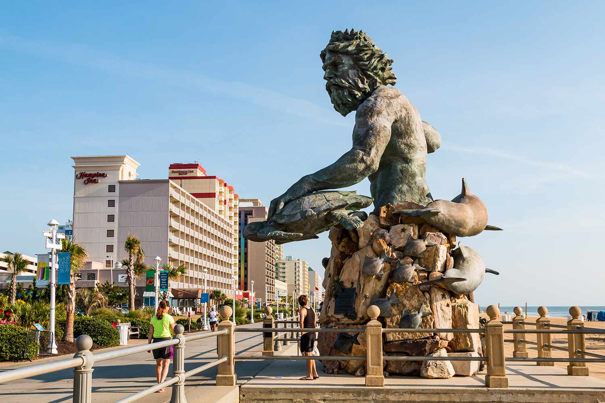
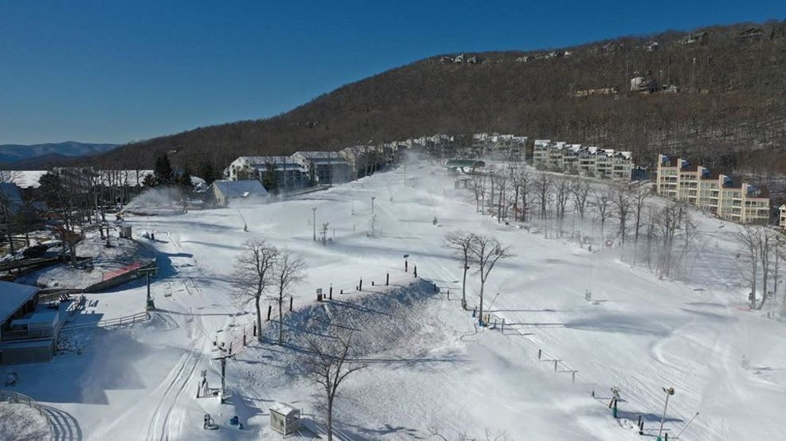

Virginia is known for its history and natural beauty, but that's not the only thing here. Across the state there are a variety of trip-worthy amusement parks, resorts, and tourist sites. Here are just a few:
1. Busch Gardens
Busch Gardens, located in Williamsburg, VA offers something for everyone. Roller coasters, food, live entertainment, carnival games, animals... the list goes on. Busch Gardens is known for the amazing atmosphere and great rides, and is definitely worth the visit if you're looking for a thrill. For more information, click here.
2. Virginia Beach Ocean Front

The Virginia Beach Ocean Front is one of the most frequently visited areas in Virginia, and for good reason. Spanning miles with amazing restaurants, hotels, shopping and entertainment, and of course the beach, there is bound to be something here for you! During the Summer you are also likely to find lots of different festivals and conventions on or close by to the Boardwalk. For more information, click here.
3. Wintergreen Ski Resort

Virginia's amazing mountains and temperate climate opens up the world of snowsports in the late fall and winter. If you enjoy snowsports or want to give them a try, definitely give Wintergreen a visit. Located in the Blue Ridge Mountains, you'll find amazing scenery and fun at the resort. For more information, click here.